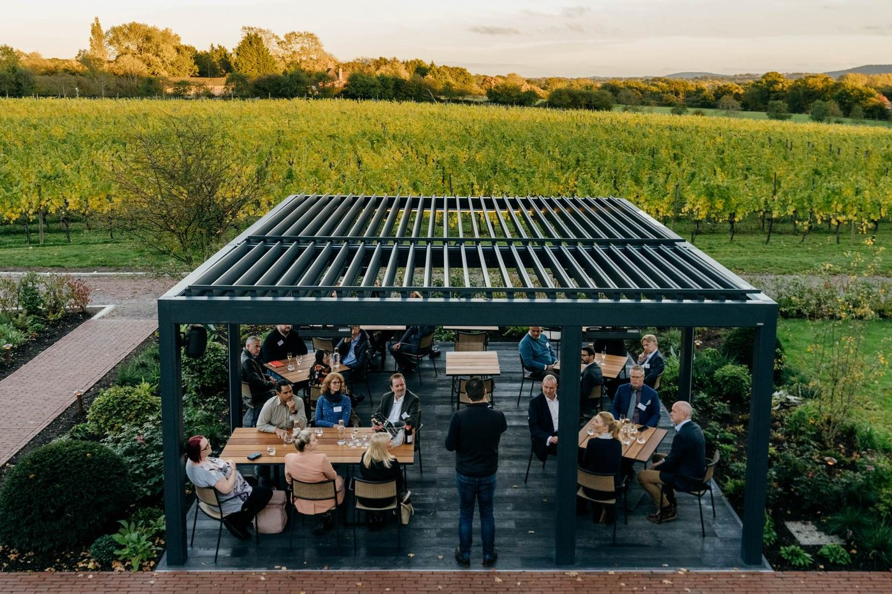

Haywards Heath & Ditchling
Ridgeview Wine Estate
A B Corp sparkling house whose wines have been poured at royal banquets, open every single day, with a roof terrace looking over the Chardonnay vines to the South Downs beyond. One of the easiest great days in Sussex wine.


The visit
Ridgeview is open every day and works either as a booked tour or a relaxed drop-in for a glass, a plate and a wander through the vines. Tours and tastings run all year round.
Tours booked, tastings drop-in
Guided tours are best booked ahead and run all year round (18+), including Cellar Tours and festive events. For a relaxed taste, drop into the Winery Shop cellar door — no booking needed.
Blanc de Blancs on the roof terrace
Don't miss a glass of Blanc de Blancs on the roof terrace, looking out over the Chardonnay vineyard and the Sussex South Downs. It's the view the whole estate is built around.
The self-guided vineyard walk
Take a printed map from the Winery Shop, or just follow the signposted route with its little info points along the way. The full loop is about 30 minutes, or simply wander as far as you fancy. No booking — though the trail may close for events in the vineyard.
Nearest station is Burgess Hill (about 10 minutes by taxi), and the Village Rider bus runs almost to the gate. Parking is free, with a visitor car park, an overflow car park, EV charging and disabled bays — plenty of space.
Following a renovation in October, The Rows & Vine restaurant is moving into a new space upstairs above the Winery Shop for winter — likely open Thursday–Monday, with hours to be confirmed. Tours and tastings continue all year, alongside Cellar Tours and festive events.
Common questions
Is Ridgeview dog-friendly?
Yes. Dogs are welcome on the estate in the Winery Shop and The Rows & Vine restaurant. They cannot join the tours.
Do you need to book, and is Ridgeview open in winter?
Tours are best booked ahead and run all year, including Cellar Tours and festive events. Drop-in tastings in the Winery Shop need no booking. The restaurant moves upstairs above the Winery Shop for winter after an October renovation.
Is there parking at Ridgeview?
Yes, and it's free — a visitor car park plus an overflow car park, with EV charging and disabled bays.
Can you walk the vineyard for free?
Yes. A self-guided walk (roughly 30 minutes for the full loop) is open to all with no booking — take a map from the Winery Shop or follow the signs. The trail may occasionally close for vineyard events.
What's the nearest station to Ridgeview?
Burgess Hill, about a 10-minute taxi away. The Village Rider bus also runs close to the estate.
What should a first-time visitor not miss?
A glass of Blanc de Blancs on the roof terrace, overlooking the Chardonnay vineyard and the South Downs.
At a glance
- Where
- Ditchling Common, East Sussex · BN6 8TP
- Open
- Every day
- Tastings
- Drop-in at the Winery Shop
- Tours
- Booked · 18+ · all year
- Food on site
- The Rows & Vine (upstairs for winter)
- Dogs
- Winery Shop & restaurant · not tours
- Walking
- Free self-guided walk (~30 min)
- Parking
- Free · EV & disabled bays
- Nearest station
- Burgess Hill (10 min)
Also on Haywards Heath & Ditchling
- Artelium Wine Estate Streat
- Court Garden Ditchling